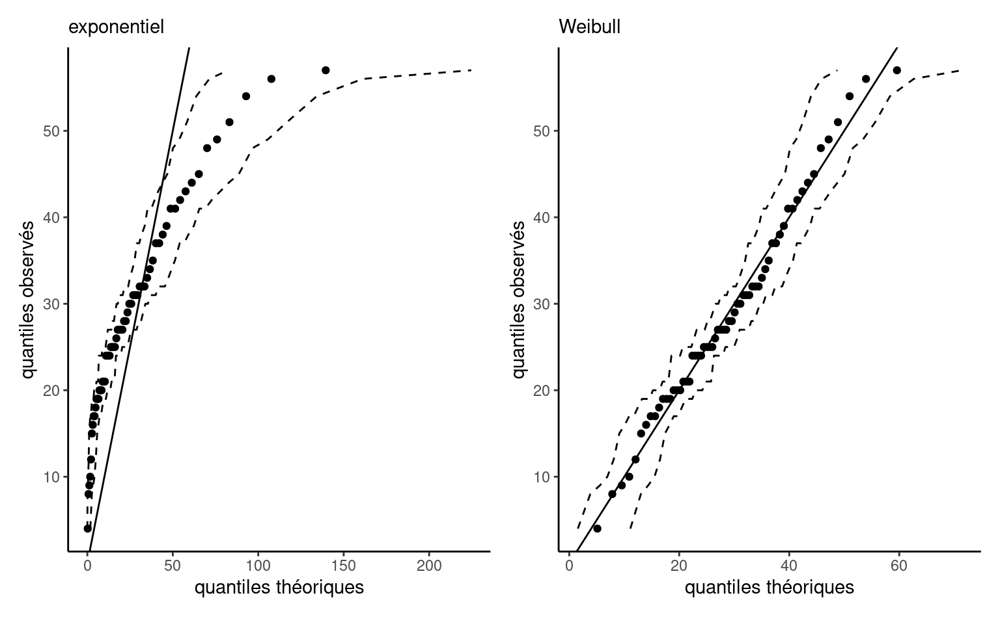
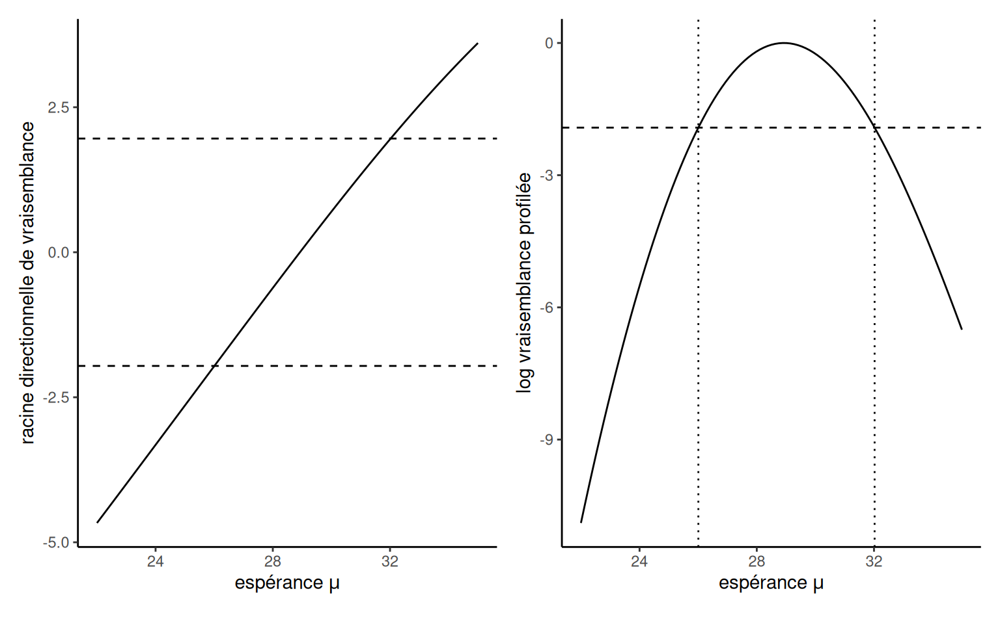

3 Inférence basée sur la vraisemblance
Ce chapitre traite de modélisation statistique et d’inférence basée sur la vraisemblance, la méthodologie la plus populaire dans le monde de la statistique.
Important
Objectifs d’apprentissage
- Apprendre la terminologie associée à l’inférence basée sur la vraisemblance.
- Dériver des expressions explicites pour l’estimateur du maximum de vraisemblance de modèles simples.
- En utilisant l’optimisation numérique, obtenir des estimations de paramètres et leurs erreurs-type en utilisant le maximum de vraisemblance.
- Utiliser les propriétés de la vraisemblance pour les grands échantillons afin d’obtenir des intervalles de confiance et les propriétés des tests statistiques.
- Être capable d’utiliser les critères d’information pour la sélection des modèles.
Un modèle statistique spécifie typiquement un mécanisme de génération de données. Nous postulons ainsi que les données ont été générées à partir d’une loi de probabilité dotée de \(p\) paramètres \(\boldsymbol{\theta}.\) L’espace d’échantillonnage est l’ensemble dans lequel se trouvent les \(n\) observations, tandis que l’espace des paramètres \(\boldsymbol{\Theta} \subseteq \mathbb{R}^p\) est l’ensemble des valeurs que peuvent prendre le vecteur de paramètres.
Nous considérons un exemple pour motiver les concepts présentés ci-après. Supposons qu’on s’intéresse au temps qu’un usager doit attendre à la station Université de Montréal s’il arrive à 17h59 précise tous les jours de la semaine, juste à temps pour la prochaine rame de métro. La base de données attente consistent le temps en secondes avant que la prochaine rame ne quitte la station. Les données ont été collectées pendant trois mois et peuvent être traitées comme un échantillon indépendant. Le panneau gauche de Figure 3.1 montre un histogramme des observations \(n=62\) qui vont de \(4\) à \(57\) secondes. Les données sont positives, notre modèle doit donc tenir compte de cette caractéristique.
Exemple 3.1 (Modèle exponentiel pour les temps d’attente) Pour modéliser les temps d’attente, on considère une loi exponentielle avec paramètre d’échelle \(\lambda\) (Définition 1.8), où \(\lambda\) est l’espérance (moyenne théorique). Sous un postulat d’indépendence1, la densité conjointe des observations \(y_1, \ldots, y_n\) est \[\begin{align*} f(\boldsymbol{y}) = \prod_{i=1}^n f(y_i) =\prod_{i=1}^n \lambda^{-1} \exp(- y_i/\lambda) = \lambda^{-n} \exp\left(- \sum_{i=1}^n y_i/\lambda\right) \end{align*}\] L’espace d’échantillonnage est \(\mathbb{R}_{+}^n = [0, \infty)^n,\) et l’espace des paramètres est \((0, \infty).\)
Pour estimer le paramètre d’échelle \(\lambda\) et obtenir des mesures d’incertitude appropriées, nous avons besoin d’un cadre de modélisation.
3.1 Estimation par maximum de vraisemblance
Pour chaque valeur du paramètre \(\boldsymbol{\theta},\) on obtient une fonction de densité ou de masse pour les obserations qui varie en fonction de la compatibilité entre le modèle et les données recueillies. Cela nous permet d’obtenir une fonction objective pour l’estimation des paramètres
Définition 3.1 (Vraisemblance) La vraisemblance \(L(\boldsymbol{\theta})\) est une fonction des paramètres \(\boldsymbol{\theta}\) qui donne la probabilité (ou densité) d’observer un échantillon selon une loi postulée, en traitant les observations comme fixes, \[\begin{align*} L(\boldsymbol{\theta}; \boldsymbol{y}) = f(\boldsymbol{y}; \boldsymbol{\theta}), \end{align*}\] où \(f(\boldsymbol{y}; \boldsymbol{\theta})\) désigne la densité ou la fonction de masse conjointe du \(n\)-vecteur des observations.
Si ces dernières sont indépendantes, la densité conjointe se factorise en un produit de densité unidimensionnelle pour chaque observation et la vraisemblance devient alors \[\begin{align*} L(\boldsymbol{\theta}; \boldsymbol{y})=\prod_{i=1}^n f_i(y_i; \boldsymbol{\theta}) = f_1(y_1; \boldsymbol{\theta}) \times \cdots \times f_n(y_n; \boldsymbol{\theta}). \end{align*}\] La fonction de log-vraisemblance correspondante pour des données indépendantes et identiquement distribuées est \[\begin{align*} \ell(\boldsymbol{\theta}; \boldsymbol{y}) = \sum_{i=1}^n \ln f(y_i; \boldsymbol{\theta}) \end{align*}\]
Exemple 3.2 (Données dépendantes) La fonction de densité conjointe ne se factorise que pour les données indépendantes, mais une décomposition séquentielle alternative peut s’avérer utile. Par exemple, nous pouvons écrire la densité conjointe \(f(y_1, \ldots, y_n)\) en utilisant la factorisation \[\begin{align*} f(\boldsymbol{y}) = f(y_1) \times f(y_2 \mid y_1) \times \ldots f(y_n \mid y_1, \ldots, y_n) \end{align*}\] en termes de densitées conditionnelles. Une telle décomposition est particulièrement utile pour les séries temporelles, où les données sont ordonnées du temps \(1\) au temps \(n\) et où les modèles relient généralement l’observation \(y_n\) à son passé. Par exemple, le processus \(\mathsf{AR}(1)\) stipule que \(Y_t \mid Y_{t-1}=y_{t-1} \sim \mathsf{normale}(\alpha + \beta y_{t-1}, \sigma^2)\) et nous pouvons simplifier la log-vraisemblance en utilisant la propriété de Markov, qui stipule que la réalisation actuelle dépend du passé, \(Y_t \mid Y_1, \ldots, Y_{t-1},\) uniquement à travers la valeur la plus récente \(Y_{t-1}\). La log-vraisemblance devient donc \[\begin{align*} \ell(\boldsymbol{\theta}) = \ln f(y_1) + \sum_{i=2}^n f(y_i \mid y_{i-1}). \end{align*}\]
Définition 3.2 (Estimateur du maximum de vraisemblance) L’estimateur du maximum de vraisemblance (EMV) \(\widehat{\boldsymbol{\theta}}\) est la valeur du vecteur qui maximise la vraisemblance, \[\begin{align*} \widehat{\boldsymbol{\theta}} = \mathrm{arg max}_{\boldsymbol{\theta} \in \boldsymbol{\Theta}} L(\boldsymbol{\theta}; \boldsymbol{y}). \end{align*}\] Le logarithme naturel \(\ln\) est une transformation monotone, il est donc préférable de calculer les EMV sur l’échelle logarithmique pour éviter les imprécisions numériques et maximiser de manière équivalente la log-vraisemblance \(\ell(\boldsymbol{\theta}; \boldsymbol{y}) = \ln L(\boldsymbol{\theta}; \boldsymbol{y}).\)2
Si nous supposons que notre modèle est correct, nous nous attendons à observer ce qui a été réalisé, et nous trouvons donc le vecteur de paramètres qui rend l’échantillon le plus susceptible d’avoir été généré par notre modèle. Plusieurs propriétés de l’estimateur du maximum de vraisemblance le rendent intéressant pour l’inférence. L’estimateur du maximum de vraisemblance est efficace, c’est-à-dire qu’il présente l’erreur quadratique moyenne asymptotique la plus faible de tous les estimateurs. L’estimateur du maximum de vraisemblance est également convergent, c’est-à-dire qu’il approche de la vraie valeur du paramètre inconnu à mesure que la taille de l’échantillon augmente (asymptotiquement sans biais).
La plupart du temps, nous allons recourir à des routines d’optimisation numérique pour trouver la valeur de l’estimation du maximum de vraisemblance, ou parfois dériver des expressions explicites pour l’estimateur, à partir de la log-vraisemblance. Le panneau de droite de Figure 3.1 montre la log-vraisemblance exponentielle, qui atteint un maximum à \(\widehat{\lambda}=28.935\) secondes, la moyenne de l’échantillon des observations. La fonction diminue de part et d’autre de ces valeurs à mesure que les données deviennent moins compatibles avec le modèle. Compte tenu de l’échelle pour la log-vraisemblance, ici pour un petit échantillon, il est facile de voir que l’optimisation directe de la fonction de vraisemblance (plutôt que de son logarithme naturel) pourrait conduire à un débordement numérique, puisque \(\exp(-270) \approx 5.5 \times 10^{-118},\) et que les valeurs logarithmiques inférieures à \(-746\) seraient arrondies à zéro.
Exemple 3.3 (Calcul de l’estimateur du maximum de vraisemblance d’une loi exponentielle) La Figure 3.1 révèle que la log-vraisemblance exponentielle est unimodale. Nous pouvons utiliser le calcul différentiel pour obtenir une expression explicite pour \(\widehat{\lambda}\) sur la base de la log-vraisemblance \[\begin{align*} \ell(\lambda) = -n \ln\lambda -\frac{1}{\lambda} \sum_{i=1}^n y_i. \end{align*}\] Si on calcule la dérivée première et que l’on fixe cette dernière à zéro, on obtient \[\begin{align*} \frac{\mathrm{d} \ell(\lambda)}{\mathrm{d} \lambda} = -\frac{n}{\lambda} + \frac{1}{\lambda^2} \sum_{i=1}^n y_i = 0. \end{align*}\] En réarrangeant cette expression pour amener \(-n/\lambda\) à droite de l’égalité, et en multipliant les deux côtés par \(\lambda^2>0,\) on obtient que le point d’inflexion se situe à \(\widehat{\lambda} = \sum_{i=1}^n y_i / n.\) La dérivée deuxième de la log vraisemblance est \(\mathrm{d}^2 \ell(\lambda)/\mathrm{d} \lambda^2 = n(\lambda^{-2} - 2\lambda^{-3}\overline{y}),\) et si on évalue cette dernière à \(\lambda = \overline{y}\), on trouve une valeur négative, \(-n/\overline{y}^2.\) Cela confirme que \(\widehat{\lambda}\) est la valeur où la fonction atteint son maximum.
Exemple 3.4 (Échantillons de loi normale) Supposons que nous disposions de \(n\) observations de loi normale de paramètres de moyenne \(\mu\) et de variance \(\sigma^2\), où \(Y_i \sim \mathsf{normale}(\mu, \sigma^2)\) sont indépendants. Rappelons que la densité de la loi normale est \[\begin{align*} f(y; \mu, \sigma^2)=\frac{1}{(2\pi \sigma^2)^{1/2}}\exp\left\{-\frac{1}{2\sigma^2}(x-\mu)^2\right\}. \end{align*}\] Pour une réalisation \(y_1, \ldots, y_n\) tirée d’un échantillon aléatoire simple, la vraisemblance est \[\begin{align*} L(\mu, \sigma^2; \boldsymbol{y})=&\prod_{i=1}^n\frac{1}{({2\pi \sigma^2})^{1/2}}\exp\left\{-\frac{1}{2\sigma^2}(y_i-\mu)^2\right\}\\ =&(2\pi \sigma^2)^{-n/2}\exp\left\{-\frac{1}{2\sigma^2}\sum_{i=1}^n(y_i-\mu)^2\right\}. \end{align*}\] et la log-vraisemblance s’écrit \[\begin{align*} \ell(\mu, \sigma^2; \boldsymbol{y})=-\frac{n}{2}\ln(2\pi) -\frac{n}{2}\ln(\sigma^2)-\frac{1}{2\sigma^2}\sum_{i=1}^n (y_i-\mu)^2. \end{align*}\] On peut montrer que les estimateurs du maximum de vraisemblance pour les deux paramètres sont \[\begin{align*} \widehat{\mu}=\overline{Y}=\frac{1}{n} \sum_{i=1}^n Y_i, \qquad \widehat{\sigma}^2=\frac{1}{n}\sum_{i=1}^n (Y_i-\overline{Y})^2. \end{align*}\]
Le fait que l’estimateur de la moyenne théorique \(\mu\) soit la moyenne de l’échantillon est assez intuitif et on peut montrer que l’estimateur est sans biais pour \(\mu\). L’estimateur sans biais de la variance de l’échantillon est \[\begin{align*} S^2=\frac{1}{n-1} \sum_{i=1}^n (Y_i-\overline{Y})^2. \end{align*}\] Puisque \(\widehat{\sigma}^2=(n-1)/n S^2\), il s’ensuit que l’estimateur du maximum de vraisemblance de \(\sigma^2\) est biaisé, mais les deux estimateurs sont convergents et s’approcheront donc de la vraie valeur \(\sigma^2\) pour \(n\) suffisamment grand.
Exemple 3.5 (Moindres carrés ordinaires) Le cas des données normalement distribuées est intimement lié à la régression linéaire et aux moindres carrés ordinaires: en supposant la normalité des erreurs, les estimateurs des moindres carrés de \(\boldsymbol{\beta}\) coïncident avec l’estimateur du maximum de vraisemblance de \(\boldsymbol{\beta}\).
Le modèle de régression linéaire spécifie que \(Y_i \sim \mathsf{normale}(\mathbf{X}_i\boldsymbol{\beta}, \sigma^2)\), ou de manière équivalente \[\begin{align*} Y_i=\beta_0+\beta_1 \mathrm{X}_{i1}+\beta_2 \mathrm{X}_{i2}+\ldots +\beta_p \mathrm{X}_{ip} + \varepsilon_i, \qquad (i=1, \ldots, n), \end{align*}\] avec des aléas \(\varepsilon_i \sim \mathsf{normale}(0, \sigma^2)\). Le modèle linéaire a \(p+2\) paramètres (\(\boldsymbol{\beta}\) et \(\sigma^2\)) et la log-vraisemblance est \[\begin{align*} \ell(\boldsymbol{\theta})&=-\frac{n}{2} \ln(2\pi)-\frac{n}{2} \ln (\sigma^2) -\frac{1}{2\sigma^2}\left\{(\boldsymbol{y}-\mathbf{X}\boldsymbol{\beta})^\top(\boldsymbol{y}-\mathbf{X}\boldsymbol{\beta})\right\}^2. \end{align*}\] Maximiser la log-vraisemblance par rapport à \(\boldsymbol{\beta}\) équivaut à minimiser la somme des erreurs quadratiques \(\|\boldsymbol{y} - \widehat{\boldsymbol{y}}\|^2\). Cette fonction objective étant la même que celle des moindres carrés, il s’ensuit que l’estimateur des moindres carrés \(\widehat{\boldsymbol{\beta}}\) pour les paramètres de la moyenne est aussi l’estimateur du maximum de vraisemblance si les aléas ont la même variance \(\sigma^2\), quelle que soit la valeur de cette dernière. L’estimateur du maximum de vraisemblance \(\widehat{\sigma}^2\) est donc \[\begin{align*} \widehat{\sigma}^2=\max_{\sigma^2} \ell(\widehat{\boldsymbol{\beta}}, \sigma^2). \end{align*}\] La log-vraisemblance, en omettant tout terme ou constante qui n’est pas fonction de \(\sigma^2\), est \[\begin{align*} \ell(\widehat{\boldsymbol{\beta}}, \sigma^2) &\propto-\frac{1}{2}\left\{n\ln\sigma^2+\frac{1}{\sigma^2}(\boldsymbol{y}-\mathbf{X}\hat{\boldsymbol{\beta}})^\top(\boldsymbol{y}-\mathbf{X}\hat{\boldsymbol{\beta}})\right\}. \end{align*}\] En différenciant chaque terme par rapport à \(\sigma^2\) et en fixant le gradient à zéro, on obtient l’estimateur du maximum de vraisemblance \[\begin{align*} \widehat{\sigma}^2=\frac{1}{n}(\boldsymbol{Y}-\mathbf{X}\hat{\boldsymbol{\beta}})^\top(\boldsymbol{Y}-\mathbf{X}\hat{\boldsymbol{\beta}})= \frac{1}{n} \sum_{i=1}^n e_i^2= \frac{\mathsf{SS}_e}{n}; \end{align*}\] où \(\mathsf{SS}_e\) est la somme des carrés des résidus. L’estimateur sans biais habituel de \(\sigma^2\) calculé par le logiciel est \(S^2=\mathsf{SS}_e/(n-p-1)\), où le dénominateur est la taille de l’échantillon \(n\) moins le nombre de paramètres de la moyenne \(\boldsymbol{\beta}\), soit \(p+1\).
Proposition 3.1 (Invariance des estimateurs du maximum de vraisemblance) Si \(g(\boldsymbol{\theta}): \mathbb{R}^p \mapsto \mathbb{R}^k\) pour \(k \leq p\) est une fonction des paramètres, alors \(g(\widehat{\boldsymbol{\theta}})\) est l’estimateur du maximum de vraisemblance de cette fonction.
La propriété d’invariance explique l’utilisation répandue de l’estimation du maximum de vraisemblance. Par exemple, après avoir estimé le paramètre \(\lambda,\) nous pouvons maintenant utiliser le modèle pour dériver d’autres quantités d’intérêt et obtenir les “meilleures” estimations gratuitement. Par exemple, nous pourrions calculer l’estimation du maximum de vraisemblance de la probabilité d’attendre plus d’une minute, \(\Pr(T>60) = \exp(-60/\widehat{\lambda})= 0.126.\) On peut utiliser la fonction de répartition pexp dans R,
# Note: la paramétrisation usuelle dans R pour la loi exponentielle
# est en terme d'intensité (réciproque du paramètre d'échelle)
pexp(q = 60, rate = 1/mean(attente), lower.tail = FALSE)
#> [1] 0.126Un autre intérêt de la propriété d’invariance est la possibilité de calculer l’EMV dans la paramétrisation la plus simple, ce qui est pratique si le support est contraint. Si \(g\) est une fonction bijective de \(\boldsymbol{\theta},\) par exemple si \(\theta >0,\) maximiser le modèle paramétré en terme de \(g(\theta) = \ln \theta\) ou de \(g(\theta) = \ln(\theta) - \ln(1-\theta) \in \mathbb{R}\) si \(0 \leq \theta \leq 1,\) élimine les contraintes pour l’optimisation numérique.
Définition 3.3 (Score et information) Soit \(\ell(\boldsymbol{\theta}),\) \(\boldsymbol{\theta} \in \boldsymbol{\Theta} \subseteq \mathbb{R}^p,\) la fonction de log-vraisemblance. Le gradient (ou vecteur de dérivée première) de la log-vraisemblance \(U(\boldsymbol{\theta}) = \partial \ell(\boldsymbol{\theta}) / \partial \boldsymbol{\theta}\) est appelé fonction de score.
L’information observée est la hessienne (matrice de dérivée deuxième) du négatif de la log-vraisemblance \[\begin{align*} j(\boldsymbol{\theta}; \boldsymbol{y})=-\frac{\partial^2 \ell(\boldsymbol{\theta}; \boldsymbol{y})}{\partial \boldsymbol{\theta} \partial \boldsymbol{\theta}^\top}. \end{align*}\] En pratique, on évalue cette fonction à l’estimation du maximum de vraisemblance \(\widehat{\boldsymbol{\theta}},\) d’où le terme information observée pour désigner plutôt \(j(\widehat{\boldsymbol{\theta}}).\) Sous des conditions de régularité, l’information de Fisher est \[\begin{align*} i(\boldsymbol{\theta}) = \mathsf{E}\left\{U(\boldsymbol{\theta}; \boldsymbol{Y}) U(\boldsymbol{\theta}; \boldsymbol{Y})^\top\right\} = \mathsf{E}\left\{j(\boldsymbol{\theta}; \boldsymbol{Y})\right\} \end{align*}\] La différence est qu’on prend l’espérance de chaque fonction des observations à l’intérieur des entrées de la matrice. Quand elle évaluée au point \(\widehat{\boldsymbol{\theta}}\), l’information de Fisher mesure la variance du score, ou la courbure de ce dernier. La matrice de Fisher et la matrice d’information sont toutes deux symmétriques.
Exemple 3.6 (Information pour le modèle exponentiel) L’information de Fisher et observée pour un échantillon aléatoire simple du modèle exponentiel, \(Y_1, \ldots, Y_n,\), paramétré en terme d’échelle \(\lambda,\) est \[\begin{align*} j(\lambda; \boldsymbol{y}) &= -\frac{\partial^2 \ell(\lambda)}{\partial \lambda^2} = \frac{n}{\lambda^{2}} + \frac{2}{n\lambda^{3}}\sum_{i=1}^n y_i \\ i(\lambda) &= \frac{n}{\lambda^{2}} + \frac{2}{n\lambda^{3}}\sum_{i=1}^n \mathsf{E}(Y_i) = \frac{n}{\lambda^{2}} \end{align*}\] puisque \(\mathsf{E}(Y_i) = \lambda\) et que l’espérance est un opérateur linéaire. On trouve que \(i(\widehat{\lambda}) = j(\widehat{\lambda}) = n/\overline{y}^2\), mais cette égalité ne tient qu’à l’EMV.
Le modèle exponentiel peut s’avérer restrictif pour adéquatement capturer nos données, c’est pourquoi nous considérons une loi de Weibull comme généralisation.
Définition 3.4 (Loi de Weibull) La fonction de répartition d’une variable aléatoire de loi Weibull, de paramètres d’échelle \(\lambda>0\) et de forme \(\alpha>0\) est \[\begin{align*} F(x; \lambda, \alpha) &= 1 - \exp\left\{-(x/\lambda)^\alpha\right\}, \qquad x \geq 0, \lambda>0, \alpha>0, \end{align*}\] alors que sa densité est \[\begin{align*} f(x; \lambda, \alpha) &= \frac{\alpha}{\lambda^\alpha} x^{\alpha-1}\exp\left\{-(x/\lambda)^\alpha\right\}, \qquad x \geq 0, \lambda>0, \alpha>0. \end{align*}\] La fonction quantile, qui est l’inverse de la fonction de répartition, est \(Q(p) = \lambda\{-\ln(1-p)\}^{1/\alpha}.\) La loi Weibull inclut la loi exponentielle comme cas spécial quand \(\alpha=1.\) L’espérance de \(Y \sim \mathsf{Weibull}(\lambda, \alpha)\) est \(\mathsf{E}(Y) = \lambda \Gamma(1+1/\alpha).\)
Exemple 3.7 (Score et information d’une loi Weibull) La log-vraisemblance d’un échantillon aléatoire simple de taille \(n\) dont la réalisation est dénotée \(y_1, \ldots, y_n\), tirée d’une loi \(\mathsf{Weibull}(\lambda, \alpha)\), est \[\begin{align*} \ell(\lambda, \alpha) = n \ln(\alpha) - n\alpha\ln(\lambda) + (\alpha-1) \sum_{i=1}^n \ln y_i - \lambda^{-\alpha}\sum_{i=1}^n y_i^\alpha. \end{align*}\] Le gradient de cette fonction est3 \[\begin{align*} U(\lambda, \alpha) = \begin{pmatrix}\frac{\partial \ell(\lambda, \alpha)}{\partial \lambda} \\ \frac{\partial \ell(\lambda, \alpha)}{\partial \alpha} \end{pmatrix} &= \begin{pmatrix} -\frac{n\alpha}{\lambda} +\alpha\lambda^{-\alpha-1}\sum_{i=1}^n y_i^\alpha \\ \frac{n}{\alpha} - n \ln(\lambda) + \sum_{i=1}^n \ln y_i - \sum_{i=1}^n \left(\frac{y_i}{\lambda}\right)^{\alpha} \times\ln\left(\frac{y_i}{\lambda}\right). \end{pmatrix} \end{align*}\] et l’information observée est \[\begin{align*} j(\lambda, \alpha) &= - \begin{pmatrix} \frac{\partial^2 \ell(\lambda, \alpha)}{\partial \lambda^2} & \frac{\partial^2 \ell(\lambda, \alpha)}{\partial \lambda \partial \alpha} \\ \frac{\partial^2 \ell(\lambda, \alpha)}{\partial \alpha \partial \lambda} & \frac{\partial^2 \ell(\lambda, \alpha)}{\partial \alpha^2} \end{pmatrix} \\&= \begin{pmatrix} \lambda^{-2}\left\{-n\alpha + \alpha(\alpha+1)\sum_{i=1}^n (y_i/\lambda)^2\right\} & \lambda^{-1}\sum_{i=1}^n [1-(y_i/\lambda)^\alpha\{1+\alpha\ln(y_i/\lambda)\}]\\ \lambda^{-1}\sum_{i=1}^n [1-(y_i/\lambda)^\alpha\{1+\alpha\ln(y_i/\lambda)\}]& n\alpha^{-2} + \sum_{i=1}^n (y_i/\lambda)^\alpha \{\ln(y_i/\theta)\}^2 \end{pmatrix} \end{align*}\]
Proposition 3.2 (Optimisation basée sur le gradient) Pour obtenir l’estimateur du maximum de vraisemblance, nous trouverons généralement la valeur du vecteur \(\boldsymbol{\theta}\) qui résout le vecteur de score, c’est-à-dire \(U(\widehat{\boldsymbol{\theta}})=\boldsymbol{0}_p.\) Cela revient à résoudre simultanément un système de \(p\) équations en fixant à zéro la dérivée première par rapport à chaque élément de \(\boldsymbol{\theta}\). Si \(j(\widehat{\boldsymbol{\theta}})\) est une matrice définie positive (c’est-à-dire que toutes ses valeurs propres sont positives), alors le vecteur \(\widehat{\boldsymbol{\theta}}\) maximise la fonction de log-vraisemblance et est l’estimateur du maximum de vraisemblance.
Nous pouvons utiliser une variante de l’algorithme de Newton–Raphson si la vraisemblance est trois fois différentiable et si l’estimateur du maximum de vraisemblance ne se trouve pas sur la frontière de l’espace des paramètres. Si nous considérons une valeur initiale \(\boldsymbol{\theta}^{\dagger},\) alors une expansion en série de Taylor du premier ordre de la vraisemblance du score dans un voisinage \(\boldsymbol{\theta}^{\dagger}\) de l’EMV \(\widehat{\boldsymbol{\theta}}\) donne \[\begin{align*}
\boldsymbol{0}_p & = U(\widehat{\boldsymbol{\theta}}) \stackrel{\cdot}{\simeq} \left.
\frac{\partial \ell(\boldsymbol{\theta})}{\partial \boldsymbol{\theta}} \right|_{\boldsymbol{\theta} = \boldsymbol{\theta}^{\dagger}} + \left.
\frac{\partial^2 \ell(\boldsymbol{\theta})}{\partial \boldsymbol{\theta} \partial \boldsymbol{\theta}^\top}\right|_{\boldsymbol{\theta} = \boldsymbol{\theta}^{\dagger}}(\widehat{\boldsymbol{\theta}} - \boldsymbol{\theta}^{\dagger})\\&=U(\boldsymbol{\theta}^{\dagger}) - j(\boldsymbol{\theta}^{\dagger})(\widehat{\boldsymbol{\theta}} - \boldsymbol{\theta}^{\dagger}).
\end{align*}\] En réarrangeant cette expression pour isoler \(\widehat{\boldsymbol{\theta}}\) (pourvu que la matrice \(p \times p\) d’information observée \(j(\widehat{\boldsymbol{\theta}})\) soit inversible à l’EMV), on obtient \[\begin{align*}
\widehat{\boldsymbol{\theta}} \stackrel{\cdot}{\simeq} \boldsymbol{\theta}^{\dagger} +
j^{-1}(\boldsymbol{\theta}^{\dagger})U(\boldsymbol{\theta}^{\dagger}).
\end{align*}\] Cela suggère l’utilisation d’une procédure itérative: à partir d’une valeur de départ \(\boldsymbol{\theta}^{\dagger}\) dans le voisinage du mode, on applique le schéma de mise à jour jusqu’à ce que le gradient soit approximativement nul. Si la valeur est éloignée du mode, l’algorithme peut diverger. Pour éviter cela, nous pouvons multiplier le terme \(j^{-1}(\boldsymbol{\theta}^{\dagger})U(\boldsymbol{\theta}^{\dagger})\) par un facteur d’amortissement \(c<1\). Une variante de l’algorithme, appelée score de Fisher, utilise l’information de Fisher \(i(\boldsymbol{\theta})\) au lieu de l’information observée, \(j(\boldsymbol{\theta}),\) pour des raisons de stabilité numérique et pour éviter les situations où cette dernière n’est pas définie positive. Il s’agit de la routine d’optimisation utilisée dans la fonction glm de R.
Exemple 3.8 (Estimateurs du maximum de vraisemblance d’un échantillon Weibull) Nous nous tournons vers l’optimisation numérique pour obtenir l’estimation du maximum de vraisemblance de la loi de Weibull, en l’absence formule explicite pour les EMV. À cette fin, il faut écrire une fonction qui encodent la log-vraisemblance, ici la somme des contributions de la log-densité. La fonction nll_weibull ci-dessous prend comme premier argument le vecteur de paramètres, pars, et renvoie la valeur négative de la log-vraisemblance que nous souhaitons minimiser4. Nous codons également le gradient, bien que nous puissions recourir à la différenciation numérique. Nous utilisons ensuite optim, la routine d’optimisation par défaut de R, pour minimiser nll_weibull. La fonction renvoie une liste contenant un code de convergence (0 indiquant la convergence), les EMV dans par, la log-vraisemblance \(\ell(\widehat{\boldsymbol{\theta}})\) et la hessienne, qui est la matrice d’information observée évaluée à \(\widehat{\boldsymbol{\theta}}.\) La surface de log-vraisemblance, pour les paires de vecteurs d’échelle et de forme \(\boldsymbol{\theta} = (\lambda, \alpha),\) est représentée dans la Figure 3.3. Nous pouvons voir que l’algorithme a convergé vers le maximum de vraisemblance et vérifier que le score satisfait \(U(\widehat{\boldsymbol{\theta}}) = 0\) à la valeur optimale retournée.
Code
# Charger les données
data(attente, package = "hecstatmod")
# Négatif de la log vraisemblance pour un échantillon Weibull
nll_weibull <- function(pars, y) {
# Gérer le cas de paramètres négatifs (impossible)
if (isTRUE(any(pars <= 0))) {
return(1e10) # retourner une valeur large finie (pour éviter les messages d'avertissement)
}
- sum(dweibull(
x = y,
scale = pars[1],
shape = pars[2],
log = TRUE
))
}
# Gradient du négatif de la fonction de log vraisemblance Weibull
gr_nll_weibull <- function(pars, y) {
scale <- pars[1]
shape <- pars[2]
n <- length(y)
grad_ll <- c(
scale = -n * shape / scale + shape * scale^(-shape - 1) * sum(y^shape),
shape = n / shape - n * log(scale) + sum(log(y)) -
sum(log(y / scale) * (y / scale)^shape)
)
return(-grad_ll)
}
# Utiliser les EMV du modèle exponentiel pour l'initialisation
valinit <- c(mean(attente), 1)
# Vérifier préalablement que le gradient est correct!
# La commande retourne TRUE si la dérivée numérique égale sa version analytique à tolérance donnée
isTRUE(all.equal(
numDeriv::grad(nll_weibull, x = valinit, y = attente),
gr_nll_weibull(pars = valinit, y = attente),
check.attributes = FALSE
))
#> [1] TRUE
# Optimisation numérique avec optim
opt_weibull <- optim(
par = valinit,
# valeurs initiales
fn = nll_weibull,
# passer la fonction à optimiser, son premier argument doit être le vecteur de paramètres
gr = gr_nll_weibull,
# gradient (optionnel)
method = "BFGS",
# algorithme BFGS est basé sur le gradient, une alternative robuste est"Nelder"
y = attente,
# vecteur d'observations passées en argument additionnel à "fn"
hessian = TRUE # retourner la matrice de dérivée secondes évaluée aux EMV
)
# Alternative avec un Newton
# nlm(f = nll_weibull, p = valinit, hessian = TRUE, y = attente)
# Estimations du maximum de vraisemblance
(mle_weibull <- opt_weibull$par)
#> [1] 32.6 2.6
# Vérifier la convergence numérique à l'aide du gradient
gr_nll_weibull(mle_weibull, y = attente)
#> scale shape
#> 0.0000142 0.0001136
# Vérifier que la hessienne est positive définite
# Toutes les valeurs propres sont positives
# Si oui, on a trouvé un maximum et la matrice est invertible
isTRUE(all(eigen(opt_weibull$hessian)$values > 0))
#> [1] TRUE3.2 Loi d’échantillonnage
La loi d’échantillonnage d’un estimateur \(\widehat{\boldsymbol{\theta}}\) est la loi de probabilité induite par les données aléatoires sous-jacentes.
Supposons que nous disposons d’un échantillon aléatoire simple, de sorte que la log-vraisemblance est constitutée d’une somme de \(n\) termes et que l’information s’accumule linéairement avec la taille de l’échantillon. Nous dénotons la vraie valeur du vecteur de paramètres inconnu \(\boldsymbol{\theta}_0.\) Sous des conditions de régularité appropriées, cf. section 4.4.2 de Davison (2003), pour un échantillon de grande taille \(n,\) nous pouvons effectuer une série de Taylor du score et appliquer le théorème de la limite centrale à la moyenne résultante puisque \(U(\boldsymbol{\theta})\) et \(i(\boldsymbol{\theta})\) sont la somme de \(n\) variables aléatoires indépendantes, et que \(\mathsf{E}\{U(\boldsymbol{\theta})\}=\boldsymbol{0}_p,\) et \(\mathsf{Var}\{U(\boldsymbol{\theta})\}=i(\boldsymbol{\theta}),\) l’application du théorème de la limite centrale et de la loi des grands nombres donne \[\begin{align*} i(\boldsymbol{\theta}_0)^{-1/2}U(\boldsymbol{\theta}_0) \stackrel{\cdot}{\sim}\mathsf{normale}_p(\boldsymbol{0}, \mathbf{I}_p). \end{align*}\]
On peut utiliser ce résultat pour obtenir une approximation à la loi d’échantillonnage des estimateurs du maximum de vraisemblance de \(\widehat{\boldsymbol{\theta}},\) \[\begin{align*} \widehat{\boldsymbol{\theta}} \stackrel{\cdot}{\sim} \mathsf{normale}_p\{\boldsymbol{\theta}_0, i^{-1}(\boldsymbol{\theta})\} \end{align*}\] ou la matrice de covariance est l’inverse de l’information de Fisher. En pratique, puisque la valeur des paramètres \(\boldsymbol{\theta}_0\) est inconnue, on remplace la covariance soit par \(i^{-1}(\widehat{\boldsymbol{\theta}})\) ou par l’inverse de l’information observée, \(j^{-1}(\widehat{\boldsymbol{\theta}}).\) Cela est justifié par le fait que les deux matrices d’informations \(i(\widehat{\boldsymbol{\theta}})\) et \(j(\widehat{\boldsymbol{\theta}})\) convergent vers \(i(\boldsymbol{\theta})\) quand \(n \to \infty\).
Au fur et à mesure que la taille de l’échantillon augmente, l’estimateur du maximum de vraisemblance \(\widehat{\boldsymbol{\theta}}\) devient centré autour de la valeur \(\boldsymbol{\theta}_0\) qui minimise l’écart entre le modèle et le véritable processus de génération des données. Dans les grands échantillons, la loi d’échantillonnage de l’estimateur du maximum de vraisemblance est approximativement quadratique.
Exemple 3.9 (Matrice de covariance et erreurs-type pour le modèle de Weibull) Nous utilisons la sortie de notre procédure d’optimisation pour obtenir la matrice d’information observée et les erreurs-type pour les paramètres du modèle de Weibull. Ces dernières sont simplement la racine carrée des entrées diagonales de l’information observée évaluée aux EMV, \([\mathrm{diag}\{j^{-1}(\widehat{\boldsymbol{\theta}})\}]^{1/2}\).
# La hessienne du négatif de la log vraisemblance, évaluée aux EMV
# est la matrice d'information observée
obsinfo_weibull <- opt_weibull$hessian
vmat_weibull <- solve(obsinfo_weibull)
# Erreurs-type
se_weibull <- sqrt(diag(vmat_weibull))Une fois que l’on a les estimations du maximum de vraisemblance et les erreurs-type, on peut dériver des intervalles de confiance ponctuels de Wald pour les paramètres de \(\boldsymbol{\theta}.\) Si la quantité d’intérêt est une transformation des paramètres du modèle, on peut utiliser le résultat suivant pour procéder.
Proposition 3.3 (Normalité asymptotique et transformations) Le résultat de normalité asymptotique peut être utilisé pour dériver les erreurs standard pour d’autres quantités d’intérêt. Si \(\phi = g(\boldsymbol{\theta})\) est une fonction différentiable de \(\boldsymbol{\theta}\) dont le gradient est non-nul lorsque évalué à \(\widehat{\boldsymbol{\theta}}\), alors \(\widehat{\phi} \stackrel{\cdot}{\sim}\mathsf{normale}(\phi_0, \mathrm{V}_\phi),\) with \(\mathrm{V}_\phi = \nabla \phi^\top \mathbf{V}_{\boldsymbol{\theta}} \nabla \phi,\) où \(\nabla \phi=[\partial \phi/\partial \theta_1, \ldots, \partial \phi/\partial \theta_p]^\top.\) La matrice de covariance et le gradient sont évalués aux estimations du maximum de vraisemblance \(\widehat{\boldsymbol{\theta}}.\) Ce résultat se généralise aux fonctions vectorielles \(\boldsymbol{\phi} \in \mathbb{R}^k\) pour \(k \leq p,\) où \(\nabla \phi\) est la jacobienne de la transformation.
Exemple 3.10 (Probabilité d’attente pour un modèle exponentiel.) Considérons les données sur le temps d’attente dans le métro et la probabilité d’attendre plus d’une minute, \(\phi=g(\lambda) = \exp(-60/\lambda).\) L’estimation du maximum de vraisemblance est, par invariance, \(0.126\) et le gradient de \(g\) par rapport au paramètre d’échelle est \(\nabla \phi = \partial \phi / \partial \lambda = 60\exp(-60/\lambda)/\lambda^2.\)
# Exemple de dérivation des erreurs-type pour une
# transformation des paramètres
# Ici, on calcule Pr(Y>60) selon le modèle exponentiel
lambda_hat <- mean(attente)
# Définir la fonction d'intérêt
phi_hat <- exp(-60 / lambda_hat)
# jacobien de la transformation
dphi <- function(lambda) {
60 * exp(-60 / lambda) / (lambda^2)
}
# variance du paramètre exponentiel
V_lambda <- lambda_hat^2 / length(attente)
# variance de Pr(Y>60) via la méthode delta
V_phi <- dphi(lambda_hat)^2 * V_lambda
# extraire et imprimer les erreurs-type
(se_phi <- sqrt(V_phi))
#> [1] 0.03313.3 Tests dérivés de la vraisemblance
Nous considérons une hypothèse nulle \(\mathscr{H}_0\) qui impose des restrictions sur les valeurs possibles de \(\boldsymbol{\theta}\), par rapport à une alternative sans contrainte \(\mathscr{H}_1.\) Nous avons besoin de deux modèles emboîtés : un modèle complet et un modèle réduit, pour lequel l’espace des paramèteres est un sous-ensemble du modèle complet suite à l’imposition des \(q\) restrictions. Par exemple, la loi exponentielle est un cas particulier de la loi de Weibull si \(\alpha=1\).
L’hypothèse nulle \(\mathscr{H}_0\) testée est “le modèle réduit est une simplification adéquate du modèle complet”. Soit \(\widehat{\boldsymbol{\theta}}_0\) les EMV contraints pour le modèle sous l’hypothèse nulle, et \(\widehat{\boldsymbol{\theta}}\) les EMV du modèle complet. La vraisemblance fournit trois classes principales de statistiques pour tester cette hypothèse, soit
- les statistiques des tests du rapport de vraisemblance, notées \(R,\) qui mesurent la différence de log vraisemblance (distance verticale) entre \(\ell(\widehat{\boldsymbol{\theta}})\) et \(\ell(\widehat{\boldsymbol{\theta}}_0).\)
- les statistiques des tests de Wald, notées \(W,\) qui considèrent la distance horizontale normalisée entre \(\widehat{\boldsymbol{\theta}}\) et \(\widehat{\boldsymbol{\theta}}_0.\)
- les statistiques des tests de score de Rao, notées \(S,\) qui examinent le gradient repondéré de \(\ell,\) évaluée uniquement à \(\widehat{\boldsymbol{\theta}}_0\).

Les trois principales classes de statistiques permettant de tester une hypothèse nulle simple \(\mathscr{H}_0 : \boldsymbol{\theta}=\boldsymbol{\theta}_0\) par rapport à l’hypothèse alternative \(\mathscr{H}_a : \boldsymbol{\theta} \neq \boldsymbol{\theta}_0\) sont \[\begin{align*} W(\boldsymbol{\theta}_0) &= (\widehat{\boldsymbol{\theta}}-\boldsymbol{\theta}_0)^\top j(\widehat{\boldsymbol{\theta}})(\widehat{\boldsymbol{\theta}}-\boldsymbol{\theta}_0), &&(\text{Wald}) \\ R(\boldsymbol{\theta}_0) &= 2 \left\{ \ell(\widehat{\boldsymbol{\theta}})-\ell(\boldsymbol{\theta}_0)\right\}, &&(\text{rapport de vraisemblance})\\ S(\boldsymbol{\theta}_0) &= U^\top(\boldsymbol{\theta}_0)i^{-1}(\boldsymbol{\theta}_0)U(\boldsymbol{\theta}_0), && (\text{score}) \end{align*}\] où \(\boldsymbol{\theta}_0\) est la valeur nulle postulée du paramètre avec \(q\) restrictions. Si \(q \neq p\), alors on remplace \(\boldsymbol{\theta}_0\) par l’estimation contrainte \(\widehat{\boldsymbol{\theta}}_0\).
Asymptotiquement, toutes les statistiques de test sont équivalentes (dans le sens où elles conduisent aux mêmes conclusions sur \(\mathscr{H}_0\)), mais elles ne sont pas identiques. Sous \(\mathscr{H}_0\), les trois statistiques de test suivent une loi asymptotique \(\chi^2_q\), où les degrés de liberté \(q\) indiquent le nombre de restrictions.
Si \(\theta\) est un scalaire (cas \(q=1\)), des versions directionnelles de ces statistiques existent, \[\begin{align*} w(\theta_0)&=(\widehat{\theta}-\theta_0)/\mathsf{se}(\widehat{\theta}) &&(\text{Wald}) \\ r({\theta_0}) &= \mathrm{sign}(\widehat{\theta}-\theta)\left[2 \left\{\ell(\widehat{\theta})-\ell(\theta)\right\}\right]^{1/2} &&(\text{racine directionnelle de vraisemblance}) \\ s(\theta_0)&=i^{-1/2}(\theta_0)U(\theta_0) &&(\text{score}) \end{align*}\]
Sous cette forme, si l’hypothèse nulle \(\mathscr{H}_0: \theta = \theta_0\) est vraie, alors \(w(\theta_0)\stackrel{\cdot}{\sim} \mathsf{normale}(0,1)\), etc.
La statistique du test du rapport de vraisemblance est normalement la plus puissante des trois tests (et donc préférable selon ce critère); la statistique est aussi invariante aux reparamétrages. La statistique de score \(S\), moins utilisée, nécessite le calcul du score et de l’information de Fisher, mais n’est évaluée que sous \(\mathscr{H}_0\) (car par définition \(U(\widehat{\theta})=0\)), elle peut donc être utile dans les problèmes où les calculs de l’estimateur du maximum de vraisemblance sous l’alternative sont coûteux ou impossibles. Le test de Wald est le plus facile à dériver, mais son taux de couverture empirique peut laisser à désirer si la loi d’échantillonnage de \(\widehat{\boldsymbol{\theta}}\) est fortement asymétrique.
La statistique de Wald \(W\) est la plus courante. Les intervalles de confiance bilatéraux de niveau \((1-\alpha)\) de Wald pour les paramètres de \(\boldsymbol{\theta}\), où pour \(\theta_j\) \((j=1, \ldots, p)\), \[\begin{align*} \widehat{\theta}_j \pm \mathfrak{z}_{1-\alpha/2}\mathrm{se}(\widehat{\theta}_j), \end{align*}\] avec \(\mathfrak{z}_{1-\alpha/2}\) le quantile \(1-\alpha/2\) d’une loi normale standard. Pour un intervalle à 95%, le \(0.975\) quantile vaut \(\mathfrak{z}_{0.975}=1.96.\) Les intervalles de confiance de Wald bilatéraux sont, par construction, symmétriques. Parfois, cela donne des valeurs impossibles (par exemple, une variance négative).
Exemple 3.11 (Test de Wald pour comparer les modèles Weibull et exponentiel) Nous pouvons tester si la loi exponentielle est une simplification adéquate de la loi de Weibull en imposant la restriction \(\mathscr{H}_0: \alpha=1\). Nous comparons les statistiques de Wald \(W\) à un \(\chi^2_1\). Puisque \(\alpha\) est un paramètre de la loi Weibull, nous avons les erreurs-type gratuitement.
# Calculer la statistique de Wald
wald_exp <- (mle_weibull[2] - 1)/se_weibull[2]
# Calculer la valeur-p
pchisq(wald_exp^2, df = 1, lower.tail = FALSE)
#> [1] 3.61e-10
# valeur-p inférieure à 5%, rejet de l'hypothèse nulle
# Intervalles de confiance de niveau 95%
mle_weibull[2] + qnorm(c(0.025, 0.975))*se_weibull[2]
#> [1] 2.1 3.1
# La valeur 1 n'appartient pas à l'intervalle, rejeter H0Nous rejetons l’hypothèse nulle, ce qui signifie que le sous-modèle exponentiel n’est pas une simplification adéquate du modèle de Weibull \((\alpha \neq 1\)).
Nous pouvons également vérifier l’ajustement des deux modèles à l’aide d’un diagramme quantile-quantile (cf. Définition 1.14). Il ressort de Figure 3.4 que le modèle exponentiel surestime les temps d’attente les plus importants, dont la dispersion dans l’échantillon est inférieure à celle impliquée par le modèle. En revanche, la ligne droite presque parfaite pour le modèle de Weibull dans le panneau de droite de Figure 3.4 suggère que l’ajustement du modèle est adéquat.

Remarque 3.1 (Absence d’invariance des intervalles de confiance de Wald). Puisque les erreurs-types de paramètres dépendent de la paramétrisation, les intervalles de confiance de Wald ne sont pas invariants à ces transformations. Par exemple, si on veut des intervalles de confiance pour une fonction \(g(\boldsymbol{\theta})\) qui n’est pas linéaire, alors en général. \(\mathsf{IC}_{W}\{g(\theta)\} \neq g\{\mathsf{IC}_{W}(\theta)\}.\)
Par exemple, considérons le modèle exponentiel. Nous pouvons inverser la statistique du test de Wald pour obtenir un intervalle de confiance symétrique à 95% pour \(\phi = g(\lambda) = \exp(-60/\lambda),\) $ [0.061,$ \(0.191].\) Si nous devions naïvement transformer l’intervalle de confiance pour \(\lambda\) en un pour \(\phi\) en appliquant la fonction \(g(\cdot)\) à chaque borne, nous obtiendrions plutôt \([0.063,\) \(0.19],\) Bien que la différence soit minime ici, cela met en évidence l’invariance. L’approximation gaussienne qui sous-tend le test de Wald est fiable si la loi d’échantillonnage de la vraisemblance est presque quadratique, ce qui se produit lorsque la fonction de vraisemblance est à peu près symétrique de part et d’autre de l’estimateur du maximum de vraisemblance.
Le test du rapport de vraisemblance est invariant par rapport aux reparamétrages préservant les intérêts, de sorte que la statistique de test pour \(\mathscr{H}_0: \phi=\phi_0\) et \(\mathscr{H}_0: \lambda = -60/\ln(\phi_0)\) est la même. Les intervalles de confiance de Wald peuvent être comparées à celles (meilleures) obtenues à l’aide du test du rapport de vraisemblance. Ces dernières sont obtenues par une recherche numérique des limites de \[\begin{align*} \left\{\theta: 2\{\ell(\widehat{\boldsymbol{\theta}}) - \ell(\boldsymbol{\theta})\} \leq \chi^2_p(1-\alpha)\right\}, \end{align*}\] où \(\chi^2_p(1-\alpha)\) est le quantile de niveau \((1-\alpha)\) de la loi \(\chi^2_p\). De tels intervalles, pour \(\alpha = 0.1, \ldots, 0.9\), sont tracés sur la Figure 3.3 (courbes de contour). Si \(\boldsymbol{\theta}\) est un \(p\)-vecteur \((p> 1)\), alors les intervalles de confiance pour \(\theta_i\) sont dérivés à partir de la vraisemblance profilée. Les intervalles de confiance basés sur la statistique du rapport de vraisemblance sont invariants aux reparamétrages, donc \(\mathsf{IC}_{R}\{g(\theta)\} = g\{\mathsf{IC}_{R}(\theta)\}.\) Comme la vraisemblance est nulle si la valeur d’un paramètre se situe en dehors de l’espace des paramètres \(\boldsymbol{\Theta}\), les intervalles n’incluent que les valeurs plausibles de \(\theta.\) En général, les intervalles sont asymétriques et présentent de meilleures taux de couverture.
# Log vraisemblance exponentielle
ll_exp <- function(lambda) {
sum(dexp(attente, rate = 1 / lambda, log = TRUE))
}
# EMV du paramètre d'échelle
lambda_hat <- mean(attente)
# Recherche des zéros de la fonction pour obtenir
# les limites des intervalles de confiance
lrt_lb <- uniroot(
# borne inférieure, en utilisant l'EMV
f = function(r) {
2 * (ll_exp(lambda_hat) - ll_exp(r)) - qchisq(0.95, 1)
},
interval = c(0.5 * min(attente), lambda_hat)
)$root
lrt_ub <- uniroot(
# borne supérieure
f = function(r) {
2 * (ll_exp(lambda_hat) - ll_exp(r)) - qchisq(0.95, 1)
},
interval = c(lambda_hat, 2 * max(attente))
)$rootL’intervalle de confiance à 95% de la statistique du rapport de vraisemblance pour \(\lambda\) peut être trouvé en utilisant un algorithme de recherche linéaire: l’intervalle de confiance à 95% pour \(\lambda\) est \(\mathsf{IC}_R(\lambda)[22.784,37.515].\) Par invariance, l’intervalle de confiance à 95% pour \(\phi\) est \(\mathsf{IC}_R(\phi) = [0.072, 0.202] = g\{\mathsf{IC}_R(\lambda)\}.\)
3.4 Vraisemblance profilée
Parfois, nous pouvons vouloir effectuer des tests d’hypothèse ou dériver des intervalles de confiance pour un sous-ensemble spécifique des paramètres du modèle, ou une transformation de ces derniers. Dans ce cas, l’hypothèse nulle ne restreint qu’une partie de l’espace et les autres paramètres, dits de nuisance, ne sont pas spécifiés — la question est alors de savoir quelles valeurs utiliser pour la comparaison avec le modèle complet. Il s’avère que les valeurs qui maximisent la log-vraisemblance contrainte sont celles que l’on doit utiliser pour le test, et la fonction particulière dans laquelle ces paramètres de nuisance sont intégrés est appelée vraisemblance profilée.
Définition 3.5 (Log-vraisemblance profilée) Soit un modèle paramétrique avec log-vraisemblance \(\ell(\boldsymbol{\theta})\), dont le vecteur de paramètres de dimension \(p\) \(\boldsymbol{\theta}=(\boldsymbol{\psi}, \boldsymbol{\varphi})\) peut être séparé en un sous-vecteur de longueur \(q\) contenant les paramètres d’intérêts, disons \(\boldsymbol{\psi}\) et un sous-vecteur de longueur \((p-q)\) contenant les paramètres de nuisance \(\boldsymbol{\varphi}.\)
La log-vraisemblance profilée \(\ell_{\mathsf{p}}\) est une fonction de \(\boldsymbol{\psi}\) qui est obtenue en maximisant la log-vraisemblance ponctuellement à chaque valeur fixe \(\boldsymbol{\psi}_0\) sur le vecteur de nuisance \(\boldsymbol{\varphi}_{\psi_0},\) \[\begin{align*} \ell_{\mathsf{p}}(\boldsymbol{\psi})=\max_{\boldsymbol{\varphi}}\ell(\boldsymbol{\psi}, \boldsymbol{\varphi})=\ell(\boldsymbol{\psi}, \widehat{\boldsymbol{\varphi}}_{\boldsymbol{\psi}}). \end{align*}\]
Exemple 3.12 (Log-vraisemblance profilée pour le paramètre de forme d’une loi Weibull) Considérons le paramètre de forme \(\psi \equiv\alpha\) comme paramètre d’intérêt, et le paramètre d’échelle \(\varphi\equiv\lambda\) comme paramètre de nuisance. En utilisant le gradient dérivé dans l’Exemple 3.7, nous constatons que la valeur de l’échelle qui maximise la log-vraisemblance pour un \(\alpha\) donné est \[\begin{align*} \widehat{\lambda}_\alpha = \left( \frac{1}{n}\sum_{i=1}^n y_i^\alpha\right)^{1/\alpha}. \end{align*}\] Si on substitue cette valeur dans la log-vraisemblance, on obtient une fonction de \(\alpha\) uniquement, ce qui réduit également le problème d’optimisation pour les EMV d’une loi Weibull à une recherche linéaire le long de \(\ell_{\mathsf{p}}(\alpha)\). Le panneau de gauche de Figure 3.3 montre la crête le long de la direction de \(\alpha\) correspondant à la surface de log-vraisemblance. Si l’on considère ces courbes de niveau comme celles d’une carte topographique, la log-vraisemblance profilée correspond dans ce cas à une marche le long de la crête des deux montagnes dans la direction \(\psi\), le panneau de droite montrant le gain/la perte d’altitude. Le profil d’élévation correspondant à droite de Figure 3.3 avec les points de coupure pour les intervalles de confiance basés sur le rapport de vraisemblance<. Nous devrions obtenir numériquement, à l’aide d’un algorithme de recherche lin/aire, les limites de l’intervalle de confiance de part et d’autre de \(\widehat{\alpha}\), mais il est clair que \(\alpha=1\) n’est pas dans l’intervalle de 99%.
# EMV conditionnels de lambda pour alpha donné
lambda_alpha <- function(alpha, y = attente) {
(mean(y^alpha))^(1 / alpha)
}
# Log vraisemblance profilée pour alpha
prof_alpha_weibull <- function(par, y = attente) {
sapply(par, function(a) {
nll_weibull(pars = c(lambda_alpha(a), a), y = y)
})
}Exemple 3.13 (Log-vraisemblance profilée pour l’espérance d’une loi Weibull) Nous pouvons également utiliser l’optimisation numérique pour calculer la log-vraisemblance profilée d’une fonction des paramètres. Supposons que nous soyons intéressés par le temps moyen d’attente théorique. Selon le modèle Weibull, cette valeur est \(\mu = \mathsf{E}(Y) = \lambda\Gamma(1+1/\alpha)\). À cet effet, nous reparamétrons le modèle en termes de \((\mu, \alpha)\), où \(\lambda=\mu/\Gamma(1+1/\alpha)\). Nous créons ensuite une fonction qui optimise la log-vraisemblance pour une valeur fixe de \(\mu\), puis renvoie \(\widehat{\alpha}_{\mu}\), \(\mu\) et \(\ell_{\mathrm{p}}(\mu)\).
Pour obtenir les intervalles de confiance d’un paramètre scalaire, il existe une astuce qui permet de s’en tirer avec une évaluation sommaire, pour autant que la log-vraisemblance profilée soit relativement lisse. Nous calculons la racine directionnelle du rapport de vraisemblance, \(r(\psi) = \mathrm{sign}(\psi - \widehat{\psi})\{2\ell_{\mathrm{p}}(\widehat{\psi}) -2 \ell_{\mathrm{p}}(\psi)\}^{1/2}\) sur une grille fine de valeurs de \(\psi\), puis nous ajustons une spline de lissage, une régression avec variable réponse \(y=\psi\) et variable explicative \(x=r(\psi)\). Nous prédisons ensuite la courbe aux quantiles normaux \(\mathfrak{z}_{\alpha/2}\) et \(\mathfrak{z}_{1-\alpha/2}\), et renvoyons ces valeurs sous forme d’intervalle de confiance. La Figure 3.5 montre comment ces valeurs correspondent aux points de coupure sur l’échelle du logarithme du rapport de vraisemblance, où la ligne verticale est donnée par \(-\mathfrak{c}(1-\alpha)/2\) où \(\mathfrak{c}\) représente le quantile d’une variable aléatoire \(\chi^2_1\).
Code
# Compute the MLE for the expected value via plug-in
mu_hat <- mle_weibull[1]*gamma(1+1/mle_weibull[2])
# Create a profile function
prof_weibull_mu <- function(mu){
# For given value of mu
alpha_mu <- function(mu){
# Find the profile by optimizing (line search) for fixed mu and the best alpha
opt <- optimize(f = function(alpha, mu){
# minimize the negative log likelihood
nll_weibull(c(mu/gamma(1+1/alpha), alpha), y = attente)},
mu = mu,
interval = c(0.1,10) #search region
)
# Return the value of the negative log likelihood and alpha_mu
return(c(nll = opt$objective, alpha = opt$minimum))
}
# Create a data frame with mu and the other parameters
data.frame(mu = mu, t(sapply(mu, function(m){alpha_mu(m)})))
}
# Create a data frame with the profile
prof <- prof_weibull_mu(seq(22, 35, length.out = 101L))
# Compute signed likelihood root r
prof$r <- sign(prof$mu - mu_hat)*sqrt(2*(prof$nll - opt_weibull$value))
# Trick: fit a spline to obtain the predictions with mu as a function of r
# Then use this to predict the value at which we intersect the normal quantiles
fit.r <- stats::smooth.spline(x = cbind(prof$r, prof$mu), cv = FALSE)
pr <- predict(fit.r, qnorm(c(0.025, 0.975)))$y
# Plot the signed likelihood root - near linear indicates quadratic
g1 <- ggplot(data = prof,
mapping = aes(x = mu, y = r)) +
geom_abline(intercept = 0, slope = 1) +
geom_line() +
geom_hline(yintercept = qnorm(0.025, 0.975),
linetype = "dashed") +
labs(x = expression(paste("espérance ", mu)),
y = "racine directionnelle de vraisemblance")
# Create a plot of the profile
g2 <- ggplot(data = prof,
mapping = aes(x = mu, y = opt_weibull$value - nll)) +
geom_line() +
geom_hline(yintercept = -qchisq(c(0.95), df = 1)/2,
linetype = "dashed") +
geom_vline(linetype = "dotted",
xintercept = pr) +
labs(x = expression(paste("espérance ", mu)),
y = "log vraisemblance profilée")
g1 + g2

L’estimateur du maximum de vraisemblance du profil se comporte comme une vraisemblance normale pour la plupart des quantités d’intérêt et nous pouvons dériver des statistiques de test et des intervalles de confiance de la manière habituelle. Un exemple célèbre de profil de vraisemblance est la fonction de risque proportionnel de Cox couvert dans le chapitre 7.
Exemple 3.14 (Transformation de Box–Cox) Parfois, le postulat de normalité de l’erreur dans une régression linéaire ne tient pas. Si les données sont strictement positives, on peut envisager une transformation de Box-Cox, \[\begin{align*} y(\lambda)= \begin{cases} (y^{\lambda}-1)/\lambda, & \lambda \neq 0\\ \ln(y), & \lambda=0. \end{cases} \end{align*}\]
Si on postule que \(\boldsymbol{Y}(\lambda) \sim \mathsf{normale}(\mathbf{X}\boldsymbol{\beta}, \sigma^2 \mathbf{I}_n)\), alors la log-vraisemblance s’écrit \[\begin{align*} L(\lambda, \boldsymbol{\beta}, \sigma; \boldsymbol{y}, \mathbf{X}) &= (2\pi\sigma^2)^{-n/2} J(\lambda, \boldsymbol{y}) \times\\& \quad \exp \left[ - \frac{1}{2\sigma^2}\{\boldsymbol{y}(\lambda) - \mathbf{X}\boldsymbol{\beta}\}^\top\{\boldsymbol{y}(\lambda) - \mathbf{X}\boldsymbol{\beta}\}\right], \end{align*}\] où \(J\) dénote le jacobien de la transformation de Box–Cox, \(J(\lambda, \boldsymbol{y})=\prod_{i=1}^n y_i^{\lambda-1}\). Pour chaque valeur de \(\lambda\), l’estimateur du maximum de vraisemblance est le même que celle de la régression linéaire, mais où \(\boldsymbol{y}\) est remplacée par \(\boldsymbol{y}(\lambda)\), soit \(\widehat{\boldsymbol{\beta}}_\lambda = (\mathbf{X}^\top\mathbf{X})^{-1}\mathbf{X}^\top \boldsymbol{y}(\lambda)\) and \(\widehat{\sigma}^2_\lambda = n^{-1}\{ \boldsymbol{y}(\lambda) - \mathbf{X}\widehat{\boldsymbol{\beta}}_\lambda\}^\top\{ \boldsymbol{y}(\lambda) - \mathbf{X}\widehat{\boldsymbol{\beta}}_\lambda\}\).
La log-vraisemblance profilée est donc \[\begin{align*} \ell_{\mathsf{p}}(\lambda) = -\frac{n}{2}\ln(2\pi \widehat{\sigma}^2_\lambda) - \frac{n}{2} + (\lambda - 1)\sum_{i=1}^n \ln(y_i) \end{align*}\] L’estimateur du maximum de vraisemblance profilée est la valeur \(\lambda\) qui minimise la somme des carrés des résidus du modèle linéaire avec \(\boldsymbol{y}(\lambda)\) comme réponse.
La transformation de Box–Cox n’est pas une solution miracle et doit être réservée aux cas où la transformation réduit l’hétéroscédasticité (variance inégale) ou crée une relation linéaire entre les explications et la réponse. La théorie fournit une explication convaincante des données avec, par exemple, la fonction de production Cobb-Douglas utilisée en économie qui peut être linéarisée par une transformation logarithmique. Plutôt que de choisir une transformation ad hoc, on pourrait choisir une transformation logarithmique si la valeur 0$ est incluse dans l’intervalle de confiance à 95%, car cela améliore l’interprétabilité.
3.5 Critères d’information
La vraisemblance peut également servir d’élément de base pour la comparaison des modèles : plus \(\ell(\boldsymbol{\widehat{\theta}})\) est grand, meilleure est l’adéquation. Cependant, la vraisemblance ne tient pas compte de la complexité du modèle dans le sens où des modèles plus complexes avec plus de paramètres conduisent à une vraisemblance plus élevée. Cela ne pose pas de problème pour la comparaison de modèles emboîtés à l’aide du test du rapport de vraisemblance, car nous ne tenons compte que de l’amélioration relative de l’adéquation. Il existe un risque de surajustement si l’on ne tient compte que de la vraisemblance d’un modèle.
Les critères d’information combinent la log vraisemblance, qui mesure l’adéquation du modèle aux données, avec une pénalité pour le nombre de paramètres. Les plus fréquents sont les critères d’information d’Akaike (AIC) et bayésien (BIC), \[\begin{align*} \mathsf{AIC}&=-2\ell(\widehat{\boldsymbol{\theta}})+2p \\ \mathsf{BIC}&=-2\ell(\widehat{\boldsymbol{\theta}})+p\ln(n), \end{align*}\] où \(p\) dénote le nombre de paramètres du modèle. Le plus petit la valeur du critère d’information, le meilleur le modèle.
Notez que les critères d’information ne constituent pas des tests d’hypothèse formels sur les paramètres, mais qu’ils peuvent être utilisés pour comparer des modèles non imbriqués (mais ils sont alors très imprécis!) Ces outils fonctionnent sous des conditions de régularité et les critères d’information estimés sont assez bruyants, de sorte que les comparaisons pour les modèles non emboîtés sont hasardeuses bien que populaires. Si nous voulons comparer la vraisemblance de différents modèles de probabilité, nous devons nous assurer qu’ils incluent une constante de normalisation5. Le \(\mathsf{BIC}\) est plus strict que le \(\mathsf{AIC}\), car sa pénalité augmente avec la taille de l’échantillon, ce qui permet de sélectionner des modèles plus parsimonieux. Le \(\mathsf{BIC}\) est un critère convergent, ce qui signifie qu’il choisira le vrai modèle parmi un ensemble de modèles avec une probabilité de 1 lorsque \(n \to \infty\) si ce dernier fait partie du catalogue de modèles à comparer. En pratique, cela présente peu d’intérêt si l’on suppose que tous les modèles sont des approximations de la réalité (il est peu probable que le vrai modèle soit inclus dans ceux que nous considérons). Pour sa part, \(\mathsf{AIC}\) sélectionne souvent des modèles trop compliqués dans les grands échantillons, alors que \(\mathsf{BIC}\) choisit des modèles trop simples.
Une mise en garde s’impose: s’il est possible de comparer des modèles de régression non emboîtés à l’aide de critères d’information, ceux-ci ne peuvent être utilisés que lorsque la variable de réponse est la même. Vous pouvez comparer une régression de Poisson avec une régression linéaire pour une réponse \(Y\) en utilisant des critères d’information à condition d’inclure toutes les constantes de normalisation dans votre modèle. Les logiciels omettent souvent les termes constants; cela n’a pas d’impact lorsque vous comparez des modèles avec les mêmes facteurs constants, mais cela a de l’importance lorsque ceux-ci diffèrent. Cependant, on ne peut pas les comparer à un modèle log-linéaire avec une réponse \(\ln(Y)\). Les comparaisons entre les modèles log-linéaires et linéaires ne sont valables que si vous utilisez la vraisemblance de Box–Cox, car elle inclut le jacobien de la transformation.
Si \(A\) et \(B\) sont des variables aléatoires indépendantes, leur probabilité conjointe est le produit des probabilités des événements individuels, \(\Pr(A \cup B) = \Pr(A)\Pr(B).\) La même factorisation tient pour la fonction de densité ou de masse, lesquelles sont les dérivées de la fonction de répartition.↩︎
Puisque dans la plupart des cas on a un produit de densités, prendre le logarithme transforme un produit de termes potentiellement petits en une somme de log densités, ce qui est plus facile côté dérivation et plus stable du point de vue du calcul numérique.↩︎
Par exemple, en utilisant une calculatrice symbolique.↩︎
La plupart des algorithmes d’optimisation minimisent les fonctions par rapport à leurs arguments, nous minimisons donc la log-vraisemblance négative, ce qui équivaut à maximiser la log-vraisemblance↩︎
Les logiciels enlèvent parfois les termes ou constantes qui ne sont pas des fonctions des paramètres.↩︎